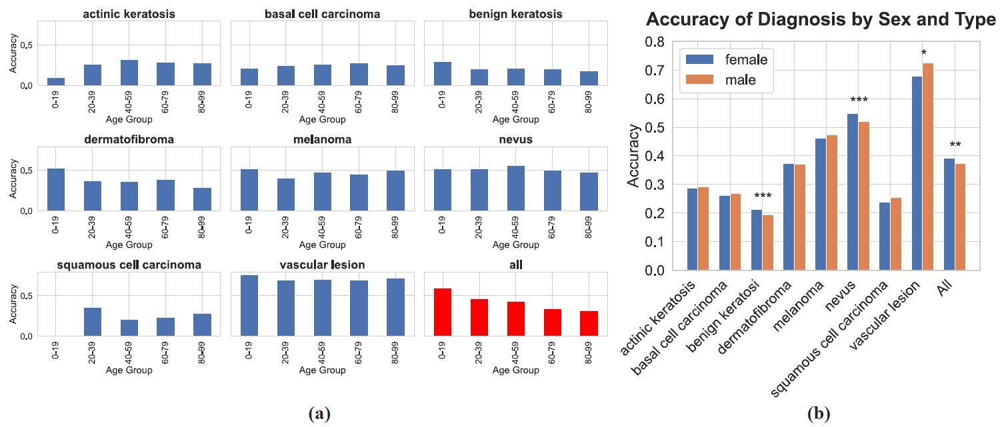

Diagnostic biases

a) Diagnostic biases as a function of patient age in ISIC 2019 challenge dataset. b) Diagnostic biases as a function of patient gender in ISIC 2019 challenge dataset.
Deep learning has been widely utilized in medical diagnosis. Convolutional neural networks and transformers can achieve high predictive accuracy, which can be on par with or even exceed human performance. However, uncertainty quantification remains an unresolved issue, impeding the deployment of deep learning models in practical settings. Conformal analysis can, in principle, estimate the uncertainty of each diagnostic prediction, but doing so effectively requires extensive human annotations to characterize the underlying empirical distributions. This has been challenging in the past because instance-level class distribution data has been unavailable: Collecting massive ground truth labels is already challenging, and obtaining the class distribution of each instance is even more difficult. Here, we provide a large skin cancer instance-level class distribution dataset, SkinCON, that contains 25,331 skin cancer images from the ISIC 2019 challenge dataset. SkinCON is built upon over 937,167 diagnostic judgments from 10,509 participants. Using SkinCON, we propose the distribution regularized adaptive predictive sets (DRAPS) method for skin cancer diagnosis. We also provide a new evaluation metric based on SkinCON. Experiment results show the quality of our proposed DRAPS method and the uncertainty variation with respect to patient age and sex from health equity and fairness perspective.
We plot the response frequency of sample skin cancer images. We argue that the empirical response distribution may reveal the inherent skin cancer property.
User interface used for diagnostic annotation. A random skin cancer image was presented to users. Users are asked to classify which skin cancer type it is among the 8 classes.
a) Diagnostic biases as a function of patient age in ISIC 2019 challenge dataset. b) Diagnostic biases as a function of patient gender in ISIC 2019 challenge dataset.
Results on ISIC 2019 Challenge Dataset with α=0.1. We report coverage and size of naive, RAPS, and our proposed method for eight different image classifiers.
SkinCON is available to download for research purposes.
SkinCON contains 25,330 valid skin cancer instance-level class distribution data. Our original train/val dataset can be accessed here.